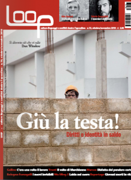
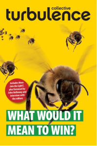

Turbulence Begin Collaboration with ‘The Post-Capitalist Project’
We’ve begun collaborating with The Post-Capitalist Project which describes itself as “a cooperative, nonsectarian venture of left journals, popular education centers, and electronic media.”
On the Project’s website, they explain the following:
“Our goal is to make easily available the wide range of new programs, experiments, and theories analyzing the transition beyond capitalism toward a socialist future, recognizing that “socialism” is a protean concept encompassing many different historical experiences and future possibilities.
“The project seeks rigorous interrogations of a wide range of questions, addressing possible changes in literally all aspects of our current way of life—from our vision of the potential development of human capacities, to the specific ways a post-capitalist economy—production, distribution and consumption– could function, role of markets, etc., to how our moral and ethical priorities can help us reshape our society, to our relationship to technology and nature, to our forms of governance/self-governance, to how we organize now for a future world–and much more.
“We are also interested in the question of what we can create or have created within capitalism that contributes to a socialist society, as well as why we should be envisioning a future world, especially since we may expect these visions to change and develop in the course of struggle.”
Each collaborating publication or project contributes at least one, and a maximum of five, articles per year. Our first contribution is the editorial article, Life in Limbo?, published in Issue 5 of our magazine.
Other contributors to the Project currently include: The Brecht Forum | Left Turn | New Labor Forum | Portside | Radical History Review | Rethinking Marxism | Science & Society | Situations: Project of the Radical Imagination | Socialism and Democracy | Socialist Project | Socialist Register | The Indypendent | The Nation | Transform! | WorkingUSA: The Journal of Labor and Society | Z Communications
For more information, see: http://postcapitalistproject.org/about
Italian Translation of ‘Life in Limbo?’ Published by ‘Loop’
An abridged Italian translation of our Issue 5 editorial article, Life in Limbo?, was published in the October/November 2010 issue of Loop (No. 10) magazine. The entire magazine is now freely available online here. Flick through to pages 12 and 13 for our article. A translation of the complete article is available here. We would like to thank Alessandro Zagato for the translation and Alex Foti for his editorial work.
{kind=link}
Further translations are available here.
Turbulence Statement of Support for Anti-Fees and Anti-Cuts Protests in the UK
It seems increasingly obvious and necessary that we define democracy less by the exercise of the right to vote than by the exercise of taking to the streets and making ourselves heard. The recent cases of Greece and Ireland, but all ‘responses’ to the ‘financial crisis’ in general, show the extent to which political process has become detached from any sense of accountability, or any pretenses of representing ‘public opinion’, working in the ‘public interest’, or articulating a vision of the ‘public good’. Instead, the grip those very groups and interests that caused the crisis have on the state seems only to grow stronger, and their short-term self-preservation instinct appears to the rest of us like a death drive which, seeking to postpone the reckoning that the various present crises (finance, environment, energy, food) call for, can do nothing but prescribe more of the poison that got us where we are.
Right now, the UK is witnessing a battle against this death drive: the barely-elected ConDem government, despite its lack of a clear mandate for anything, is trying to pass what is a huge threat to the accessibility, diversity and quality of education in the country as a valid ‘response’ to the crisis which (they’d like us to believe) will lead to greater fairness in the future. But it doesn’t take a graduate degree to see through the lie. After three decades in which income and opportunities have been syphoned towards the top of the social pyramid like never since the first half of the 20th century, all that ‘responses’ like this amount to is trying to ingrain inequalities even more.
Turbulence is encouraged to see a growing movement in the UK rise to the challenges that lie ahead. We fully support all actions taken against the cuts in education, in public services and the arts, including all the university occupations taking place around the UK, and oppose any attempts at criminalising these, as well the underhand tactics used by police to scare people off the streets (and which those who’ve been doing this for a bit longer are sadly familiar with). The same goes to students and non-students protesting and occupying in Italy, France, Ireland, Greece, the US, and wherever else ‘we’re all in this together’ is being used as the smokescreen for creating an ever greater gap between ‘us’ and ‘them’.
Not because we think the university — or, for that matter, society — such as they are must be ‘preserved’. There’s a lot to change, and if there’s something everyone agrees upon is that right now is a good time to do it. The difference is, precisely, that much of the ‘change’ that governments and capital have to offer now is, in fact, more of the same.
Regardless of how long it takes to turn the situation around, this has to be just the beginning.
Turbulence
www.turbulence.org.uk | editors@turbulence.org.uk | twitter.com/turbulence_mag
For a collection of links to groups, networks, and organisations mobilising against the cuts, fees, and austerity measures in the UK, as well as to various news portals covering the protests, click here.
The Anti-Cuts and Austerity Movement in the UK
We’ve set up a page to keep track of the various anti-cuts and anti-austerity protests, groups, organisations and networks in the UK. Click on the following to find links to goings on in your area, as well as coordination and communication nodes and sources of news: http://turbulence.org.uk/uk-cuts-2010/
Red Pepper Review Our Book
 There’s a review of our book, What Would it Mean to Win?, in the December/January 2011 issue of Red Pepper magazine, written by the publication’s co-editor James O’Nions. The review is available via their website here, and we’ve also reproduced it here.
There’s a review of our book, What Would it Mean to Win?, in the December/January 2011 issue of Red Pepper magazine, written by the publication’s co-editor James O’Nions. The review is available via their website here, and we’ve also reproduced it here.
As ever, further discussion of Turbulence can be found here.
Swedish Translation of ‘Life in Limbo?’ Published
A Swedish translation of our Issue 5 editorial article, Life in Limbo?, is published today by the long-running magazine Brand. The full text of the translation can be found on our website here and the special issue of the magazine, launched at the annual Socialist Forum in Stockholm, can be downloaded here (or by clicking on the image). A Facebook page has been set up for discussion of the article and can be found here. We would like to thank the translators and Brand for their work!
Further translations of Life in Limbo? are available in the following languages: Danish | Dutch | German |Spanish | Turkish | Portuguese
Translations of articles published in Turbulence are available here.
Groundswell Review Our Book
A review of our book, What Would it Mean to Win?, has been published on the Groundswell website. You can find it here (and here). Further discussion of our various publications can be found here.
{kind=link}
Extended Version of The Free Association’s, ‘6 Impossible Things’ Article Published in ‘Antipode’
An extended version of The Free Association’s Issue 4 article, Six Impossible Things Before Breakfast, has been published in Antipode: A Radical Journal of Geography (Volume 42, Issue 4). Published under the title of Antagonism, Neoliberalism and Movements: Six Impossible Things Before Breakfast, the article can be downloaded here.
{kind=link}
The article is published as part of a symposium, coordinated by Paul Chatterton and titled ‘Autonomy: The Struggle for Survival, Self-Management and the Common’. It includes contributions from Turbulence authors: John Holloway, Chris Carlsson (with Francesca Manning), Massimo de Angelis, and Gustavo Esteva.
Dutch Translation of Christian Frings’ Issue 4 Article, ‘Global Capitalism: Futures and Options’
A Dutch translation of Christian Frings’ article, Global Capitalism: Futures and Options, originally published in Issue 4 of Turbulence is now available here. (We’ve also uploaded a version onto our own site here.) A German translation has also long been available here.
Turbulence Panel at Historical Materialism Conference, 11-14 Nov. London
In cooperation with the Rosa Luxemburg Foundation, we’re organising a panel at this year’s Historical Materialism conference in London (11-14 November). The panel’s title is ‘Beyond What Is and Isn’t To Be Done: The Question of Organisation Today’. Speakers are: Frieder Otto Wolf, Peter Thomas, and Ben Trott (Turbulence). Tadzio Mueller (Turbulence) will be chairing the panel.
{kind=link}
The provisional date and time for the panel is Friday 12 November, 4.15pm-6pm. The provisional programme can be found online here. We will keep you up to date with any changes here.
The conference will take place at the School of Oriental and African Studies (SOAS) and Univeristy of London Union (ULU), Russell Square, London. Nearest tube: Russell Square.
Conference registration details.
{kind=link}
-
Who we are

Turbulence is a journal/newspaper that we hope will become an ongoing space in which to think through, debate and articulate the political, social, economic and cultural theories of our movements, as well as the networks of diverse practices and alternatives that surround them. Read more here
-
Turbulence on Myspace